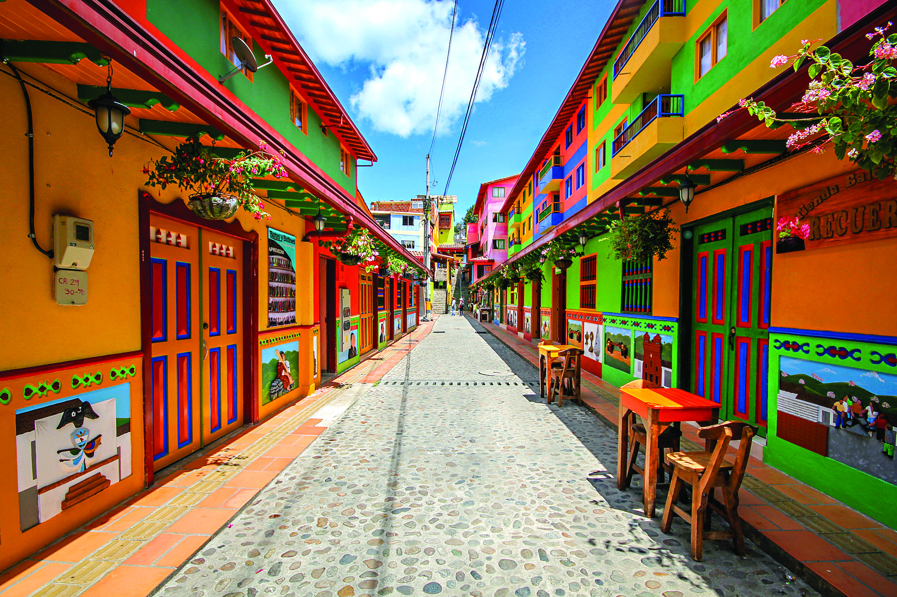

Colômbia |
|
Colômbia é uma república constitucional do noroeste da América do Sul. A Colômbia faz fronteira a leste com a Venezuela e Brasil; ao sul com o Equador e Peru; para o norte com o Mar do Caribe, ao noroeste com o Panamá; e a oeste com o Oceano Pacífico. A Colômbia também tem fronteiras marítimas com a Venezuela, Jamaica,Haiti, República Dominicana, Honduras, Nicarágua e Costa Rica. Com uma população de mais de 47 milhões de pessoas, a Colômbia tem a 29ª maior população do mundo e a segunda maior da América do Sul, depois do Brasil. A Colômbia é o terceiro país mais populosocom a língua espanhola como idioma oficial (depois do México eEspanha), e tem a quarta maior comunidade de língua espanhola no mundo depois do México, Estados Unidos e Espanha. É etnicamentemuito diverso e a interação entre os descendentes dos primeiros habitantes indígenas, colonos espanhóis, africanos trazidos comoescravos e imigrantes do século XX vindos da Europa e do Oriente Médio produziu um rico patrimônio cultural. Isso também foi influenciado pela geografia bastante variada da Colômbia. A maioria dos centros urbanos estão localizados nos Andes, mas o território colombiano também abrange a floresta amazônica, pastagens tropicais e os litorais do Caribe e do Pacífico. Ecologicamente, a Colômbia é um dos 17 países megadiversos do mundo (os de maior biodiversidadepor unidade de área).
 |